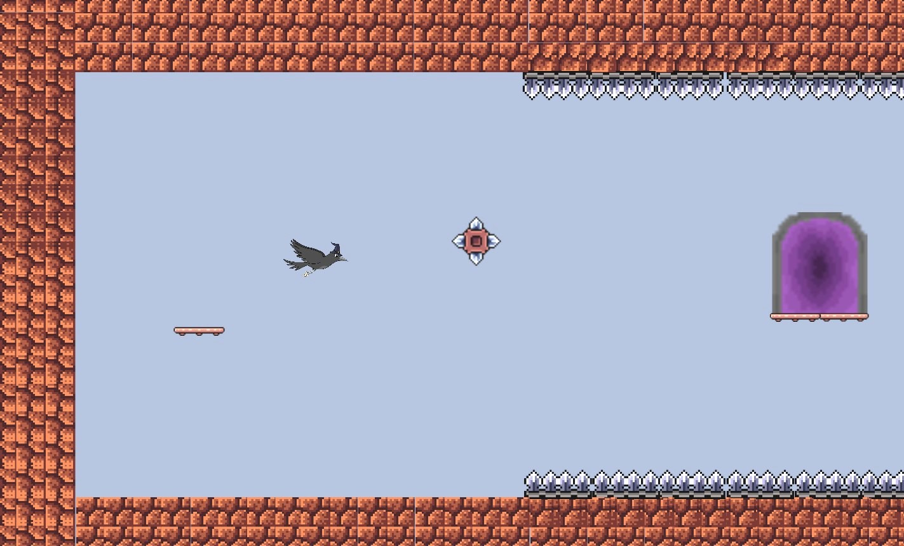
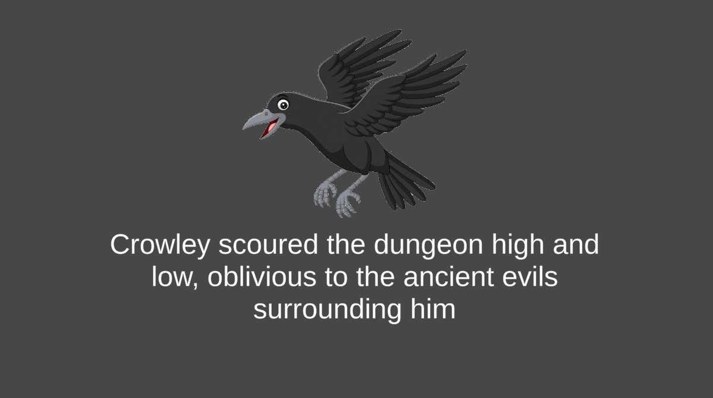

Tags: C#, Unity, game design
Project Crowley is an story based action adventure platforming game I developed using C# with the Unity engine. The game features 8 levels, cutscenes, animations, and a wide variety of obsticles and enemies. It will take the average player about 1 hour to beat. You can play the game online here or download it here.
I utilized C# scripts to handle the creation, state, and manipulation of game objects, levels, and cutscenes in my video game. I created a object factory system where I programmed an abstract base class for every object to inherit and make changes to. For example, traps of the same type inherited the same class but would have slight changes in implementation to give it a unique behavior depending on the situation. Even the character the player controls has it's own factory. To make the player go from level to level, the Unity engine first destorys everythin in the level then load the next leve. Thus, in order to preserve data from level to level, a new player object is generated from the factory that inherits data from the previous player object. For the movement system of the player and obstacles, I took advantage of linear interpolation techniques to create dynamic fluxuating movement patterns for the player and obstacles. I used this in conjunction trigometric waveforms to simulate linear interpolation by taking advantage of the fact that the unit circle fluxuates between -1 and 1. I can then use the unit circle as a scalar for manipulating objects along a predetermined constant.